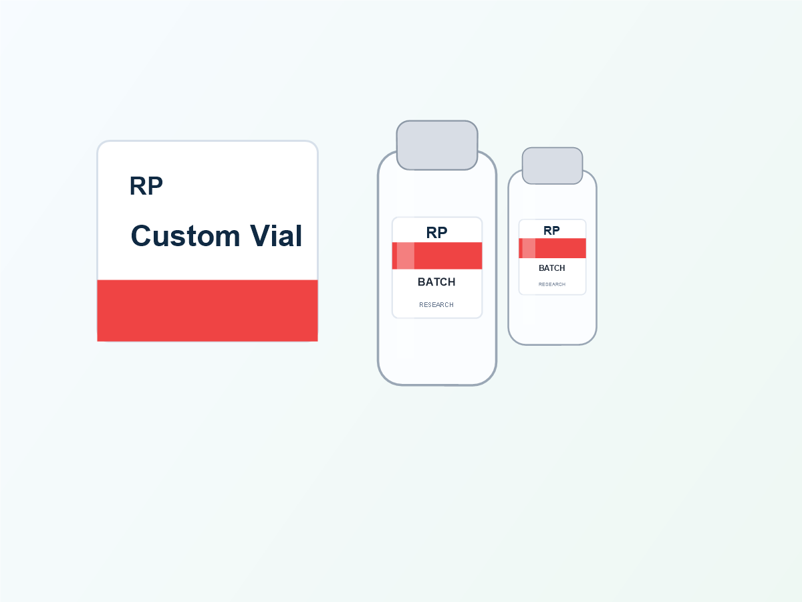
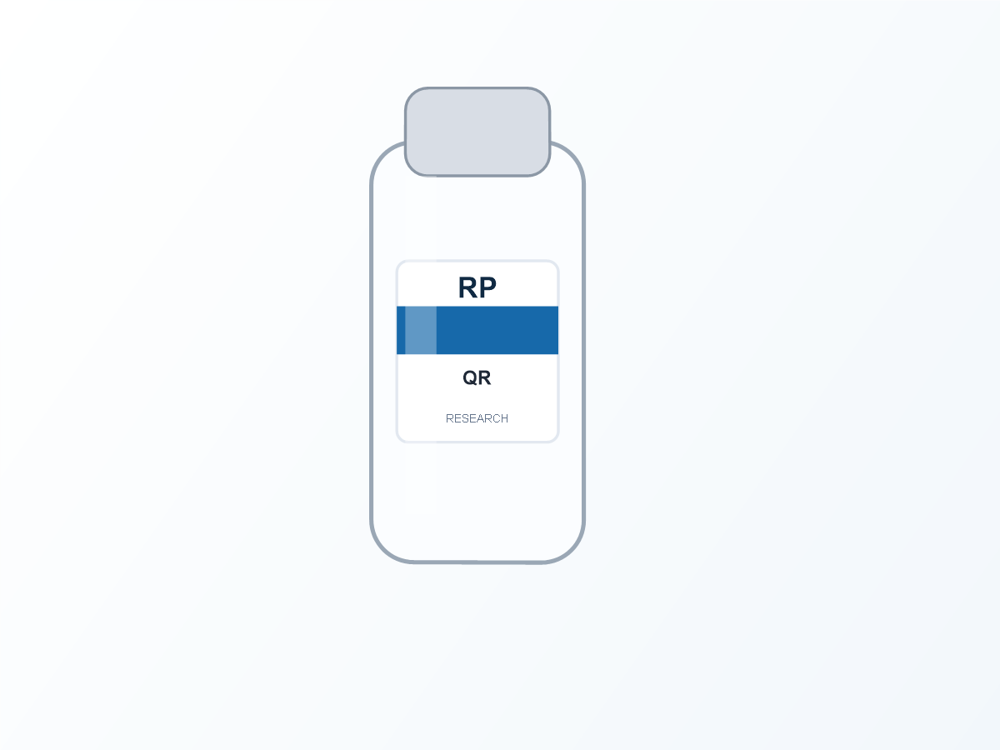
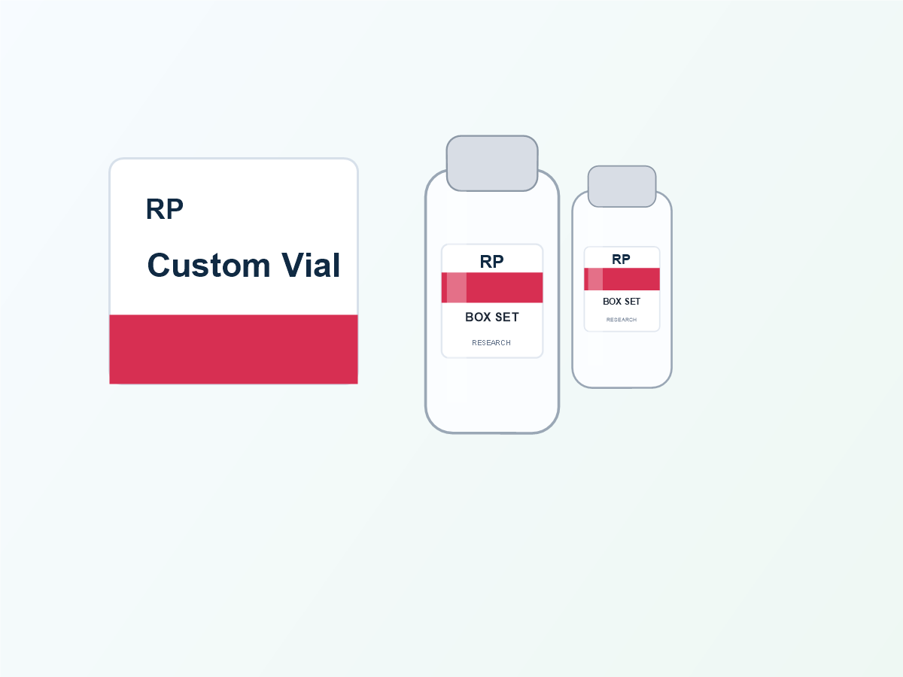

Traceability details are often added at the end of a label project. That is the moment a clean vial design turns into a crowded one. A better approach is to make three decisions before design begins: which information identifies the product immediately, which information changes between runs, and which information should be opened through a QR code rather than printed on a curved bottle.

Start with the job of each field
The front of a small vial does not have room for everything. The product name, strength or code and a clear visual identifier normally need priority because someone handling the bottle has to recognize it quickly. Batch, lot, serial and QR data have a different job: they support tracking, verification or a later lookup.
| Product identity | Product name, code, color band or strength cue. Keep this visible at first glance. |
|---|---|
| Variable run data | Batch, lot, fill date, expiry or serial field. Reserve a consistent area for it. |
| Scan-to-open data | QR code that directs to a buyer-controlled page, instructions or verification flow. |
| Extended information | Use a matching box label or insert when the vial cannot carry the content legibly. |
QR size is a print-and-use question, not a decoration choice
A QR code that looks crisp on a monitor may not scan well after it is reduced, printed on a reflective material or wrapped around a curved vial. The encoded data length, quiet zone, contrast and placement all matter. Keep the code away from the label seam and heavy reflections, and ask for a final-size proof that shows its actual position.
QR proof checklist
- Confirm the live destination URL before approval.
- Use strong contrast between the code and its background.
- Leave clear space around the code; do not crowd it with fine lines or foil effects.
- Check the final printed size against the bottle curve, not only the flat artwork.
- Keep a readable product code beside the QR when quick manual identification matters.
- Confirm whether the code is static or changes by batch or serial number.
Plan variable data before choosing the print workflow
When batch or serial information changes, the fixed label design needs a defined variable-data zone. That zone can be a white panel, a light solid area or another high-contrast location chosen for the intended marking method. Do not leave it as an afterthought: a dark holographic background or glossy image panel can make later marking hard to read.


Use the vial and box as one information system
For small packaging, the vial and box should not repeat every line word for word. Let the vial carry the fast identifier and the fields needed during handling. Let the box carry fuller descriptions, directions, barcode space and any market-specific content you have approved. This produces a more readable system and lowers the chance that important type becomes too small.
What to send for a traceability label quote
Send a bottle photo or dimensions, the label area if known, estimated quantity, the QR destination, whether data changes per batch or unit, the visible text, preferred material and any box size. RP can use that information to suggest a practical layout direction and a free digital proof. Buyers remain responsible for reviewing the final product information and any market-specific requirements before production.
Build a readable vial traceability system
Start with the information that truly belongs on the vial, then move everything else to the box or QR destination. Send your bottle and data requirements for a practical proof direction.
Chat on WhatsAppFAQ
Can I put a QR code and batch number on the same label?
Yes, provided the label has enough usable area and each field remains legible after wrapping. A proof should show the final-size arrangement.
Can a QR code be printed on holographic film?
It can, but reflective effects can reduce contrast. A solid high-contrast panel is usually a safer choice for a scannable code.
Do I need separate artwork for a matching box label?
Usually yes. The visual system can match, but the box provides a different usable area and should be designed for the information it carries.